作者：创世魂
● 概述
组件布局器是一种通用的窗口容器组件，既可以单独当一个容器使用，也可以基于此容器进行组件封装。
同时“窗口”也是基于组件布局器实现，继承了组件布局器的所有属性、方法、事件。
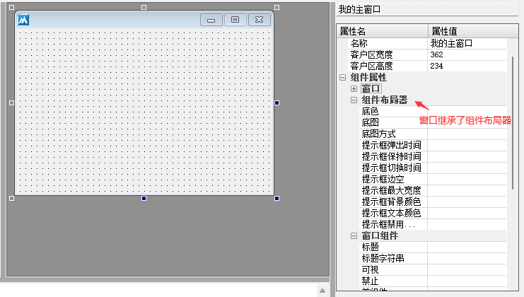
单独当容器使用时：
打开界面设计器后在“基本容器组件”中就可以看到此组件。
将此组件在窗口上绘制后，就可以在此组件中放置其它组件。
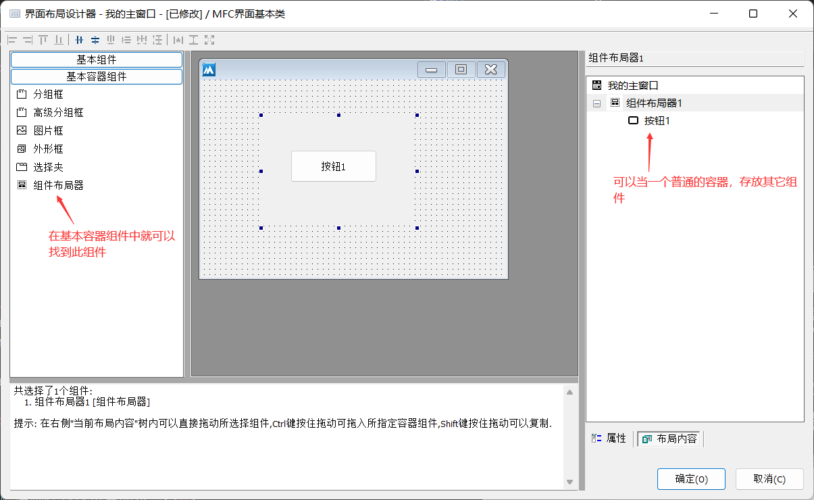
当组件布局器移动时，其内部的其它组件也会跟随移动，这也是所有容器类组件的特性。
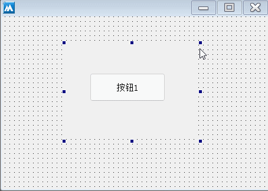
用于组件封装时：
定义一个基础类为“组件布局器”的类，然后打开其界面设计器，其打开方式和窗口设计器快捷键一致，都可以通过“Ctrl+U”打开。
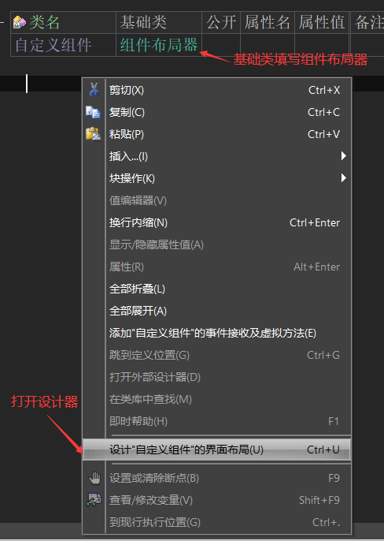
组件布局器的界面设计器和窗口设计器的使用方式和效果都是一致的，在界面上拖拽标签和编辑框，实现一个简单的带标签的编辑框组件。
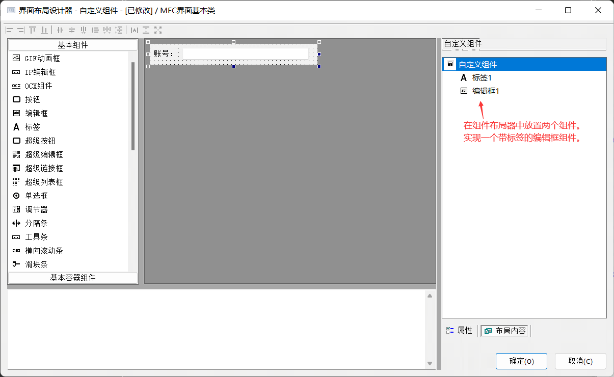
保存布局后，在主窗口中定义两个成员变量，其类型务必要和组件布局器的类名一致。
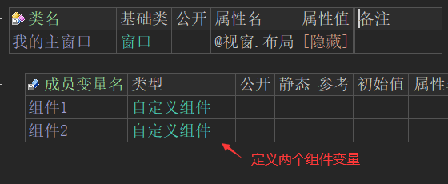
打开窗口设计器，在“布局内容”中选中一个组件，然后修改组件尺寸将其显示在窗口上。
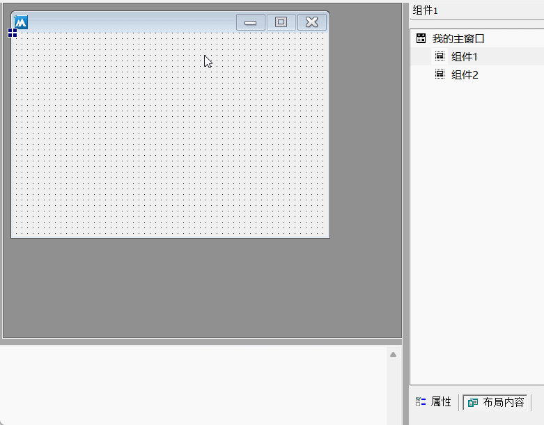
重复操作，将两个组件都显示在界面设计器中。
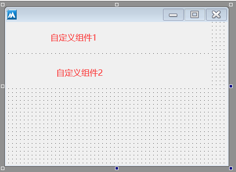
最终软件运行后就可以轻松得到两个带标签的编辑框组件。
如果其它窗口也需要使用这个组件，直接在其它窗口中类定义相同的变量，打开设计器调整组件位置即可。
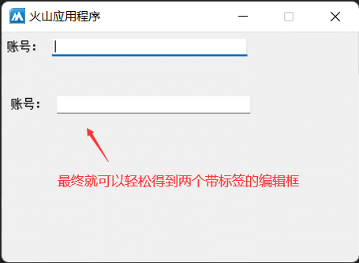
● 取底图
“取底图”帮助文档：
可用于取出“底图”属性设置的底图，同时也可以取出“置底图数据/文件”设置的底图。
注：底图通过“位图对象类”参数返回。
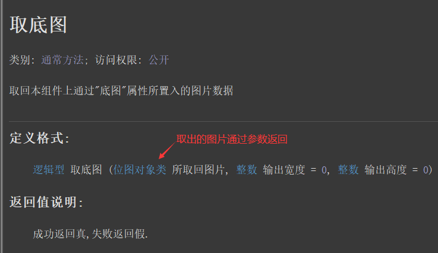
“置底图数据”帮助文档：
用于设置字节集类型的位图。
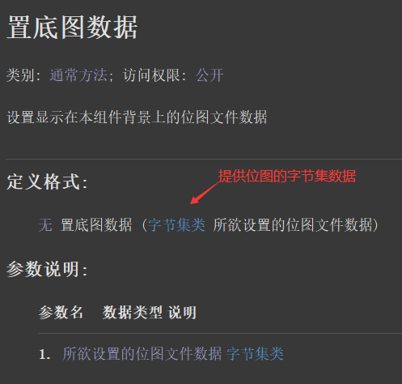
代码编写如下图：
1、按钮1单击后调用“置底图数据”方法给组件布局器1设置底图。
2、按钮2单击后调用“取底图”方法，取出位图对象后转换成字节集后赋值给组件布局器2。
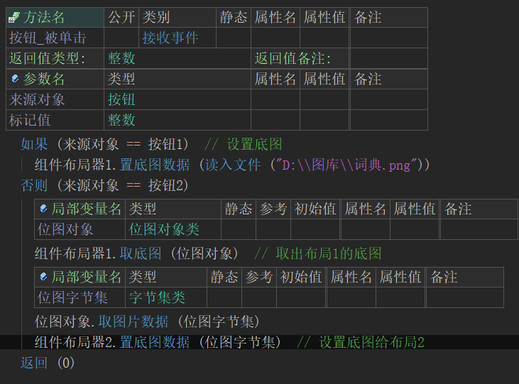
运行效果如下图：
最终可以看到底图可以正常的赋值和取出。
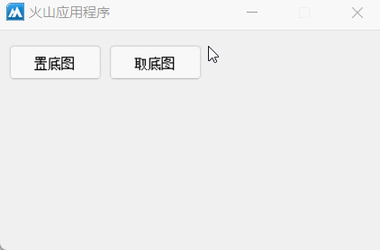
● 置底图文件
帮助文档如下图：
通过一个位图文件路径直接设置底图。
注：需要提供绝对路径。
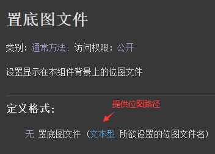
代码编写如下图：
因窗口继承了组件布局器，所以在窗口中可以直接调用本方法为窗口设置底图。
注：如果在给当前窗口设置底图时，如果底图并未铺满整个窗口可使用“底图方式”写属性调整底图的缩放方式，使其达到铺满整个窗口的目的。
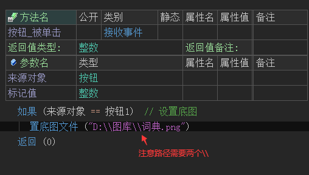
运行效果如下图：
最终窗口的背景被修改成指定图片。
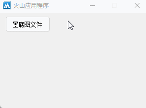
● 位置被改变(事件)
帮助文档如下图：
当组件位置发生改变时，本事件会被触发。
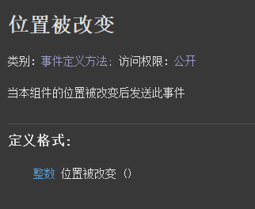
代码编写如下图：
按钮点击后修改组件布局器的位置，同时在事件下修改窗口标题，验证事件是否被触发。
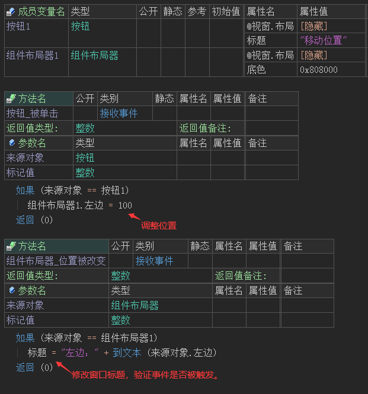
运行效果如下图：
最终当组件布局器位置被修改后，位置被改变事件可以被正常触发。
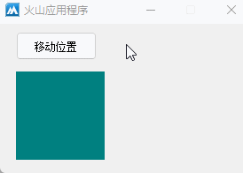
● 创建完毕(事件)
帮助文档如下图：
本事件虽然是组件布局器的事件，但是单独的组件布局器使用本事件是无效的，本事件主要提供给窗口使用。
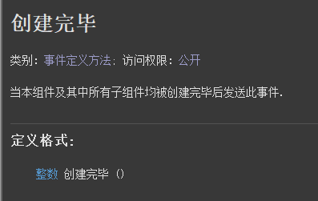
代码编写如下图：
在窗口类中添加本事件并修改底色。
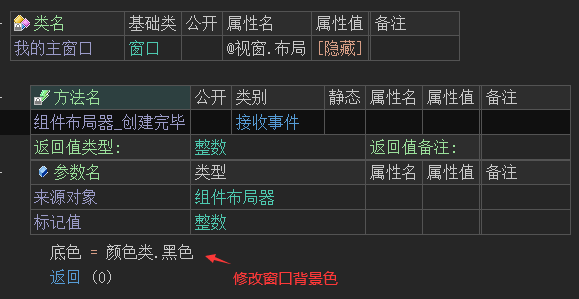
运行效果如下图：
软件运行后窗口会修改为黑色背景，证明事件被触发。
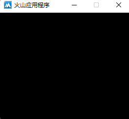
● 将被销毁(事件)
“将被销毁”帮助文档如下图：
当组件即将被销毁时触发本事件，本事件也可提供给窗口使用，用于判断窗口是否即将被销毁。
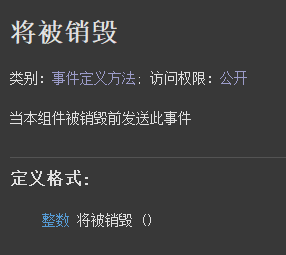
“已被销毁”帮助文档如下图：
当组件已经被销毁后触发本事件，本事件也可提供给窗口使用，用于判断窗口是否已经被销毁。
注1：当组件被销毁后，不能对当前组件进行任何操作。
注2：当组件非正常销毁时，本事件不会触发。
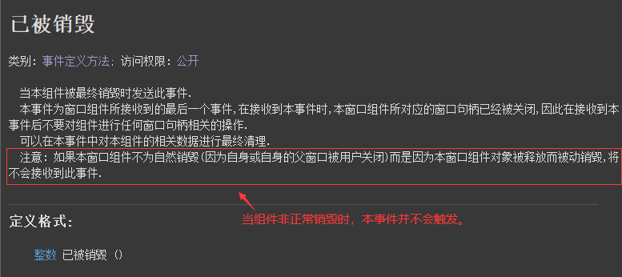
代码编写如下图：
按钮点击后调用“销毁()”方法手动销毁组件。
同时在两个事件中向编辑框中输出对应内容。
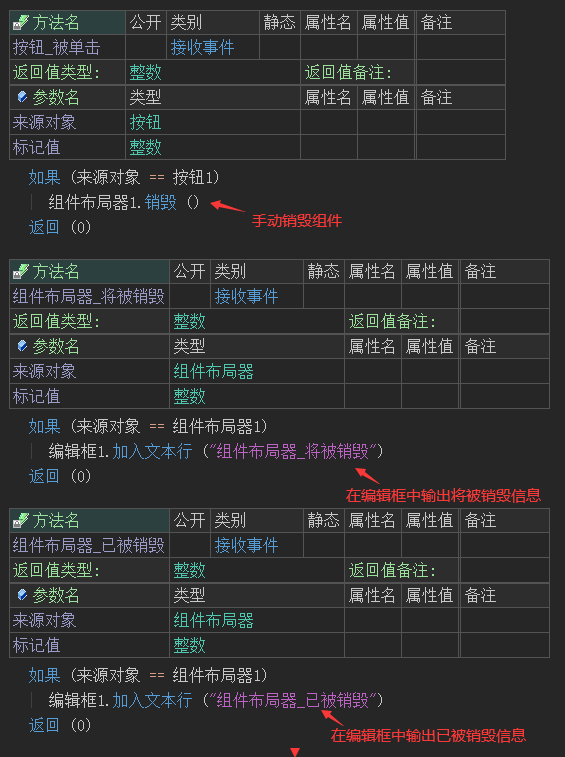
运行效果如下图：
最终可看到，将被销毁信息输出后紧跟着就是已被销毁信息。
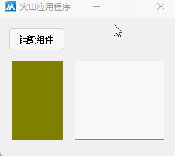
● 尺寸被改变(事件)
帮助文档如下图：
当组件布局器的尺寸被改变时，本事件会被触发。
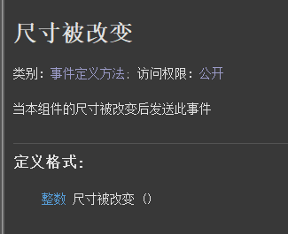
代码编写如下图：
按钮点击后修改组件布局器的尺寸，同时在当前事件下修改窗口标题，验证事件是否被触发。
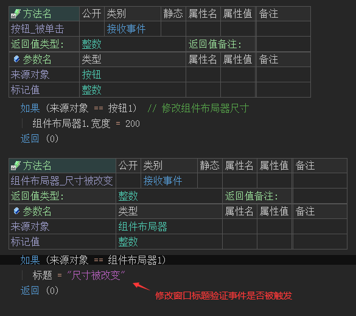
运行效果如下图：
最终当尺寸改变时，窗口标题也被修改，证明事件被触发。
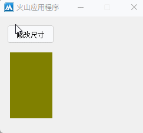
● 被显示(事件)
“被显示”帮助文档如下图：
当组件被显示时会触发本事件，本事件也可以给窗口使用，用来判断窗口是否被显示。
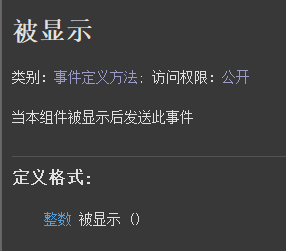
“被隐藏”帮助文档如下图：
当组件被隐藏是会触发本事件，本事件也可以给窗口使用，用来判断窗口是否被隐藏。
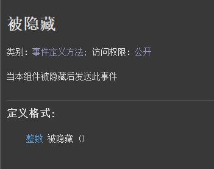
代码编写如下图：
1、按钮点击后通过判断按钮标题实现对组件的隐藏和显示。
2、添加对应的事件后，修改窗口标题验证事件是否被正常触发。
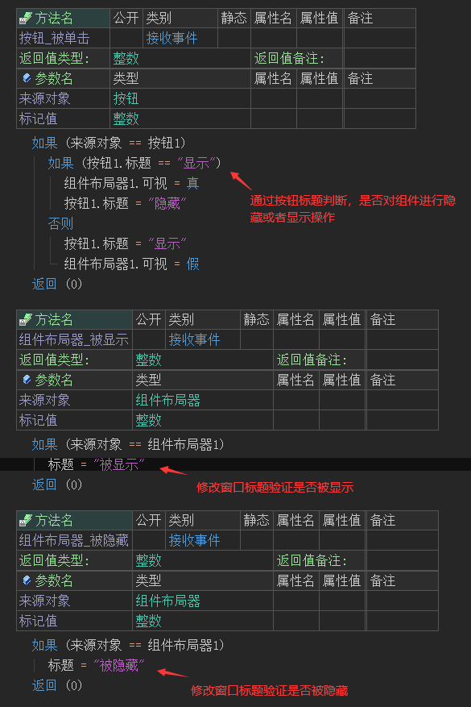
运行效果如下图：
最终两个事件均可以正常触发。
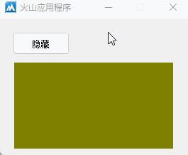
● 提示框弹出时间(写)
帮助文档如下图：
1、提示框的提示内容由其子组件的“提示信息”属性提供。
2、鼠标位于子组件时必须保持静止状态才可以弹出提示。
3、本属性用于设置弹出提示框需要的静止时间，单位毫秒。
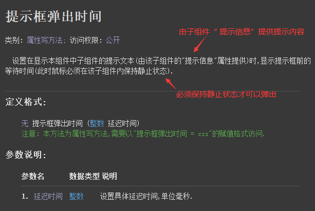
代码编写如下图：
1、因窗口继承了组件布局器，可以直接给窗口设置此属性，在100毫秒弹出提示。
2、给窗口上的按钮设置提示信息。
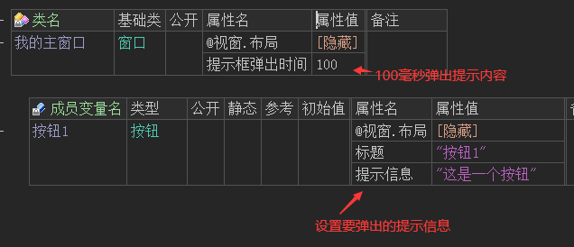
运行效果如下图：
最终当鼠标停留在按钮上时，提示信息会以极快的速度显示。
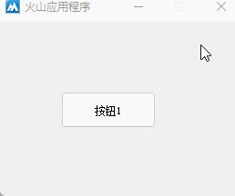
● 提示框保持时间(写)
帮助文档如下图：
设置子组件提示框的持续时间，单位毫秒。
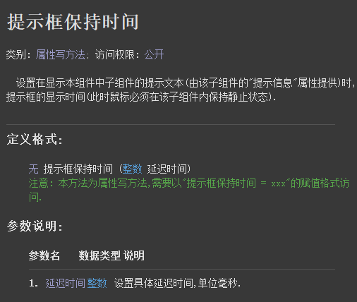
代码编写如下图：
设置提示信息保持1秒钟。
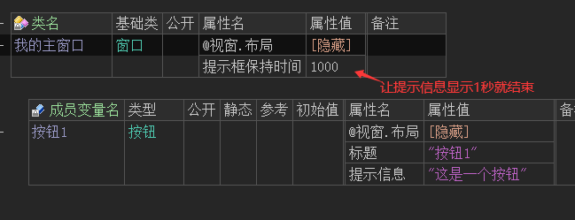
运行效果如下图：
最终当提示信息显示1秒后将自动取消显示。
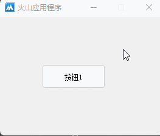
● 提示框切换时间(写)
帮助文档如下图：
用于设置鼠标从一个提示框的组件移动到另一个有提示框的组件时，切换显示的延迟时间。
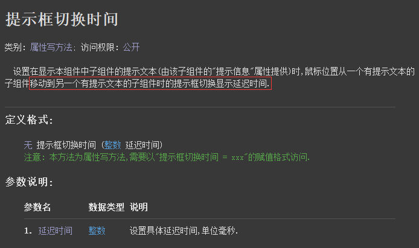
代码编写如下图：
设置提示框切换时间为500毫秒后显示。
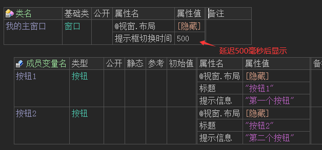
运行效果如下图：
最终在鼠标移动切换组件后，很快就可以将提示框显示出来。
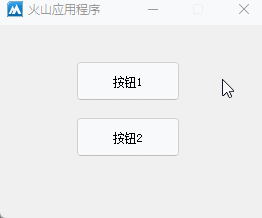
● 提示框边空(写)
帮助文档如下图：
用于设置提示框内容四边的空白尺寸，单位像素。
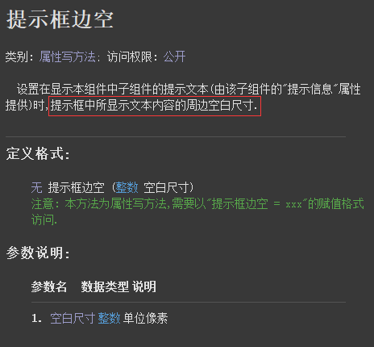
代码编写如下图：
设置空白尺寸为10像素。
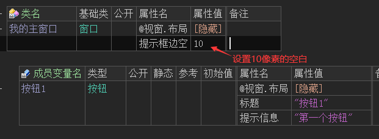
运行效果如下图：
最终可看到空白尺寸变大。
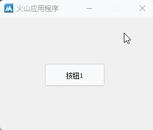
●提示框最大宽度(写)
帮助文档如下图：
设置提示框的最大显示宽度，只有设置本属性后提示框文本内容过长时才会自动换行。
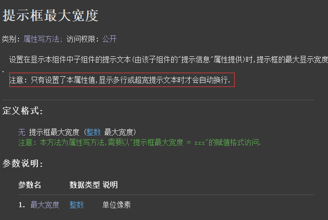
代码编写如下图：
设置本属性为50像素的宽度，并设置一个较长的提示文本。
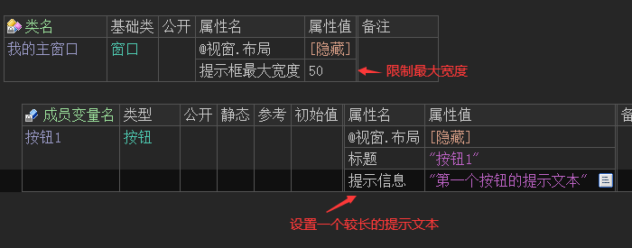
运行效果如下图：
最终提示文本将进行换行显示。
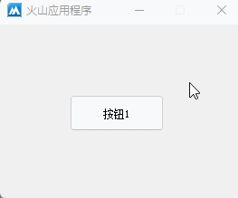
● 提示框背景/文本颜色(写)
顾名思义，以上两个属性用于设置提示框的背景色和文本颜色。
代码编写如下图：
分别设置以上两个属性的颜色。
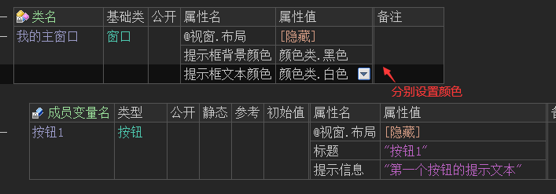
运行效果如下图：
最终提示框的颜色会被修改。
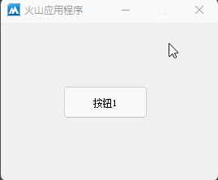
● 提示框禁用系统主题(写)
帮助文档如下图：
通过本属性可以禁用系统主题，如果本属性为假则部分效果属性将失效，所有显示效果将有系统接管。
代码编写如下图：
设置本属性为假后，同时设置提示文本颜色属性。
运行效果如下图：
最终可以看到颜色属性并未生效，这是因为系统接管了提示框的样式。